Una società di guerrieri che si chiamavano uguali, una popolazione di lavoratori privati della libertà, una cultura costruita intorno alla disciplina e alla comunità.
Prima superiore9 nuclei di studio24 domande con recupero
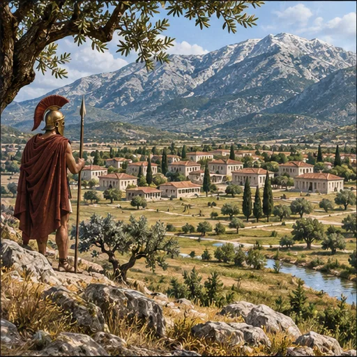
Una città senza grandi muraRicostruzione illustrata, non fotografia storica
01 — LUOGO E ORIGINI
Dove si trovava Sparta?
Per capire una società dobbiamo prima immaginare il territorio in cui viveva.
Sparta si trovava in Laconia, nel sud del Peloponneso, nella valle del fiume Eurota, ai piedi del monte Taigeto. Non era organizzata intorno a un unico centro monumentale: era formata da più nuclei abitati che costituivano un'unica polis.
Una polis greca non era soltanto un insieme di case: era una comunità politica, con istituzioni, leggi, cittadini e un territorio. Sparta estese il suo dominio anche sulla Messenia, a occidente del Taigeto. La conquista di queste terre ebbe conseguenze profonde per tutta la sua società.
Immaginiamo Sparta: villaggi, campi e montagne. Ricostruzione illustrata.
Dal mito alla storia. La tradizione collegava la Laconia a Menelao, marito di Elena, conosciuto dall'Iliade. L'arrivo dei Dori è parte dei racconti sulle origini, ma le trasformazioni del mondo miceneo e la nascita di Sparta furono processi complessi, non un singolo episodio dimostrato.
IX–VIII sec. a.C.Si consolidano gli insediamenti della futura polis.
VIII–VII sec. a.C.Espansione in Messenia e formazione del sistema di dominio.
480 a.C.Sparta partecipa alla resistenza greca contro i Persiani.
371 a.C.Sconfitta contro Tebe a Leuttra, crisi della potenza spartana.
02 — STRUTTURA SOCIALE
Tre gruppi, tre vite diverse
Non tutti gli abitanti delle terre spartane erano cittadini. La differenza fondamentale era il rapporto con libertà e potere.
SPARTIATICittadini · potere politico · guerra
PERIECILiberi · terre e mestieri · servizio militare
ILOTIServitù · lavoro agricolo · esclusione politica
La figura mostra una gerarchia dei diritti, non le proporzioni numeriche dei tre gruppi.
Spartiati
Erano i cittadini maschi con pieni diritti politici. Ricevevano l'educazione militare, partecipavano alle istituzioni ed erano tenuti al servizio armato. Il loro sostentamento dipendeva soprattutto dalla terra lavorata dagli Iloti.
Erano gli homoioi, «gli uguali» tra loro.
Perieci
Erano abitanti di comunità libere subordinate a Sparta. Possedevano beni e terre, praticavano commercio e artigianato; in guerra fornivano anche soldati. Non partecipavano alle decisioni della polis spartana.
Liberi nella vita personale, esclusi dal governo spartano.
Iloti
Erano popolazioni assoggettate, soprattutto in Laconia e Messenia. Lavoravano le terre e consegnavano parte del raccolto. Non avevano la libertà e i diritti degli Spartiati; il controllo su di loro poteva essere violento.
La loro fatica rendeva possibile la vita militare dei cittadini.
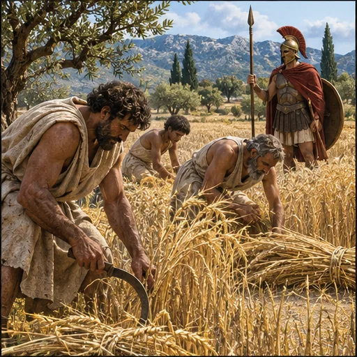
Il lavoro degli Iloti sostenne l'organizzazione spartana. Scena immaginata.
Domanda per capireCome può una città parlare di «uguali» quando la maggior parte dei suoi abitanti non gode degli stessi diritti?
03 — CAUSE E CONSEGUENZE
Perché Sparta era così militare?
La disciplina non nasce dal nulla: risponde anche al bisogno di proteggere il potere di un gruppo ristretto.
Gli Spartiati controllavano un territorio abitato da molte persone subordinate. Gli Iloti erano numerosi e potevano ribellarsi. Il controllo delle terre e del lavoro agricolo richiedeva quindi una forza militare pronta a intervenire. Allo stesso tempo, grazie al lavoro agricolo degli Iloti, molti cittadini potevano dedicare tempo all'addestramento.
Questo crea un legame circolare: il dominio permette la preparazione militare e la preparazione militare contribuisce a mantenere il dominio.
Conquista di terree popolazioni assoggettate
→
Lavoro degli Ilotiagricoltura e sostentamento
→
Addestramento spartiatedisciplina e esercito
→
Controllo del territoriodifesa e repressione
↶ il controllo mantiene il sistema
Attenzione alle fonti. Alcune testimonianze antiche descrivono la krypteia, una prova di resistenza e clandestinità associata, in certi racconti, a violenze contro gli Iloti. Gli studiosi discutono su come funzionasse e su quanto fossero diffuse queste pratiche. L'episodio del bosco nell'intervista è narrativa inventata, non un verbale storico.
04 — ESERCITO E STRATEGIA
L'oplita combatte con gli altri
La falange trasformava guerrieri singoli in una formazione compatta.
L'oplita era il soldato di fanteria pesante greco: combatteva con una grande protezione rotonda (scudo), una lancia e spesso elmo e corazza. Gli opliti si disponevano in file e ranghi serrati: la falange.
La protezione collettiva dipendeva anche dalla posizione dei compagni. Lo scudo contribuiva a difendere chi lo portava e il soldato immediatamente alla sinistra. Perciò fuggire o rompere la formazione poteva mettere in pericolo più uomini.
La disciplina militare divenne un valore sociale: obbedire, mantenere il posto, difendere il compagno erano comportamenti lodati anche fuori dal campo di battaglia.
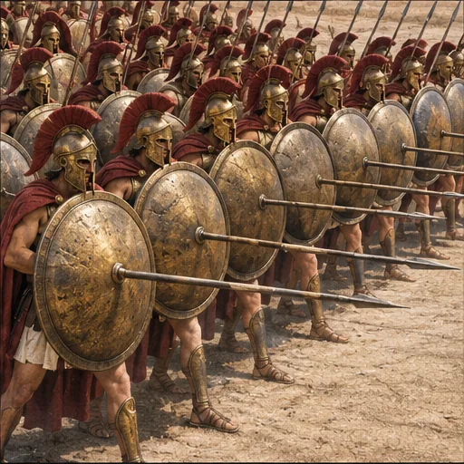
La falange: la protezione è collettiva. Ricostruzione illustrata.
Prova a rompere la formazione
Osserva gli scudi. Che cosa accade quando un guerriero abbandona il proprio posto?
◉◉◉◉◉◉
Gli scudi sono vicini: ogni guerriero conta sui compagni.
05 — EDUCAZIONE E VITA QUOTIDIANA
Educati per appartenere alla città
Per gli Spartiati l'educazione dei ragazzi era un compito della comunità, non soltanto della famiglia.
Intorno ai sette anni i figli maschi degli Spartiati iniziavano un percorso pubblico di formazione tradizionalmente chiamato agoghé. Vivevano e si esercitavano con coetanei, sotto la guida di adulti: corsa, lotta, resistenza alla fatica, disciplina e obbedienza erano fondamentali.
Si apprendevano anche canti, musica e nozioni di lettura e scrittura. L'educazione non era identica per tutti gli abitanti della Laconia: il sistema riguardava soprattutto la formazione dei giovani Spartiati.
Intorno ai vent'anni cominciava una nuova fase della vita militare; la piena partecipazione all'assemblea politica arrivava dai trent'anni per chi manteneva i requisiti di cittadinanza. I cittadini adulti prendevano parte anche a pasti comuni (*sissizi*): un modo per rafforzare i legami del gruppo.
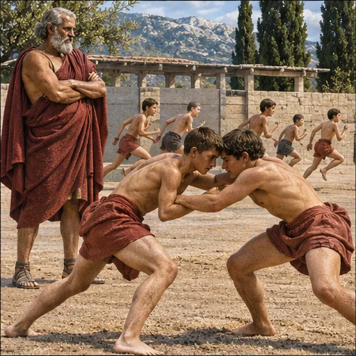
Addestramento collettivo: il gruppo educa il singolo. Scena immaginata.
7 anniinizio dell'educazione collettiva
~20 anniingresso nella vita militare adulta
30 annipartecipazione politica dei cittadini aventi diritto
Una tradizione da valutare. Plutarco, scrivendo molti secoli dopo, racconta che i neonati considerati inadatti fossero abbandonati. Non abbiamo prove per affermare che questo accadesse sistematicamente: è un esempio di quanto la storia di Sparta sia mescolata a racconti e idealizzazioni.
06 — LE DONNE
Più autonomia, nessun potere politico
Le donne delle famiglie spartiati vivevano in modo diverso da molte donne ateniesi, ma non erano cittadine con gli stessi diritti politici degli uomini.
Le ragazze delle famiglie spartiati praticavano corsa, esercizi ginnici, danza e canto. La forza fisica femminile era apprezzata, anche perché collegata all'idea di generare figli sani e robusti.
Le donne spartiati potevano possedere e gestire proprietà e godevano, in diversi ambiti della vita quotidiana, di un'autonomia maggiore rispetto a molte donne di Atene. Tuttavia non partecipavano all'Apella e non possedevano gli stessi diritti politici degli Spartiati maschi.
Non bisogna confondere le donne spartiati con le donne dei Perieci o degli Iloti: la condizione sociale cambiava profondamente la vita delle persone.
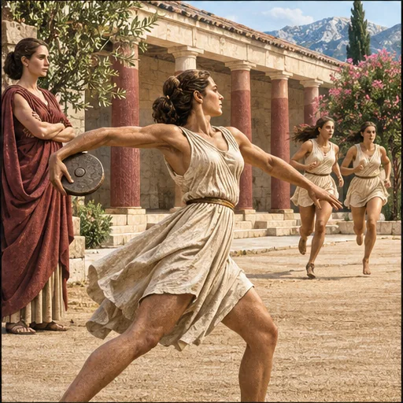
Attività fisiche delle ragazze spartiati. Ricostruzione illustrata.
«O con lo scudo, o sopra lo scudo.»
Il motto chiede al guerriero di tornare con lo scudo senza avere abbandonato i compagni, oppure di essere riportato morto anziché fuggire disonorato. È una tradizione letteraria, non la prova che ogni madre pronunciò davvero quelle parole.
Da distinguere dall'intervista. Nel racconto il vecchio descrive un «ultimo esame» delle ferite e la negazione dei funerali a chi fosse ferito soltanto alla schiena. È una rielaborazione narrativa, non una procedura storicamente documentata. Le ferite alla schiena, da sole, non dimostrerebbero una fuga.
07 — LE ISTITUZIONI
Chi prendeva le decisioni?
Sparta aveva due re, ma il potere era distribuito tra più organi. Non era una democrazia come quella ateniese.
Due re appartenevano a due famiglie ereditarie. Avevano compiti militari e religiosi; il loro potere non era illimitato. La Gherusia comprendeva 28 anziani di almeno 60 anni e i 2 re: preparava proposte e giudicava questioni importanti.
L'Apella riuniva gli Spartiati cittadini di almeno 30 anni; approvava o respingeva proposte ed eleggeva magistrati. I cinque Efori, eletti ogni anno, vigilavano sulla vita pubblica e potevano esercitare controllo anche sui re.
La tradizione attribuiva l'ordinamento a Licurgo, figura dalla storicità discussa. Le istituzioni si formarono e si trasformarono nel tempo.
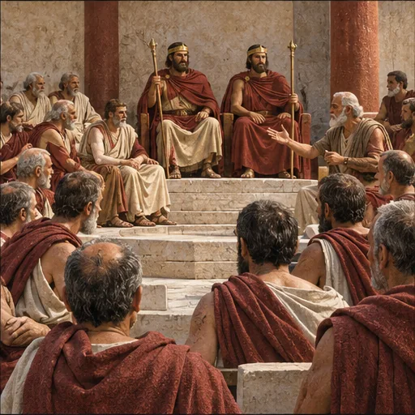
Una possibile scena politica spartana. Ricostruzione illustrata.
2 RE
Comando militare e culti religiosi
GHERUSIA
28 anziani (60+) e i 2 re: propone e giudica
5 EFORI
Eletti annualmente: controllano e amministrano
APELLA
Cittadini (30+): approva ed elegge
Relazioni fondamentali
Apella → elegge Efori e anziani · Gherusia → prepara proposte · Efori → vigilano anche sui re · Re → guidano l'esercito.
08 — CULTURA E VALORI
Sparta non era soltanto guerra
La disciplina militare era centrale, ma la città aveva poesia, musica, religione e rituali comunitari.
Gli Spartiati valorizzavano coraggio, sobrietà, obbedienza, lealtà al gruppo e rispetto delle leggi. Il vivere insieme e i pasti comuni rafforzavano il senso di appartenenza. Il termine moderno spartano conserva l'idea di una vita essenziale, senza lussi.
La cultura comprendeva anche canti corali, musica, danza, poesia e feste religiose. Il poeta Tirteo esaltò il coraggio in battaglia; Alcmane è legato alla poesia corale. I culti di Apollo, Artemide e altre divinità avevano un ruolo nella comunità.
Perfino il parlare in modo breve e incisivo è diventato famoso come stile laconico, dal nome della Laconia. Ma attenzione: l'idea di una Sparta composta esclusivamente da soldati silenziosi è uno stereotipo.
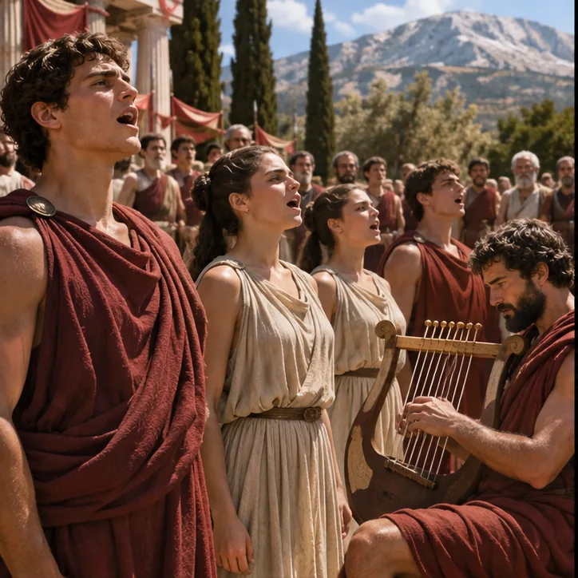
Musica e canto accompagnavano la vita religiosa e sociale. Scena immaginata.
DISCIPLINAseguire regole comuni
COESIONEdipendere dai compagni
SOBRIETÀlimitare gli eccessi
RELIGIONEfeste, culti e canti
09 — UNO SGUARDO ALLA STORIA
480 a.C.: la battaglia delle Termopili
Un episodio celebre che mostra il valore attribuito alla disciplina, ma anche il rischio di trasformare la storia in leggenda.
Nel 480 a.C. il re persiano Serse invase la Grecia. Al passo delle Termopili, tra montagne e mare, una coalizione di Greci tentò di fermarlo. Il re spartano Leonida guidò 300 Spartiati, insieme a migliaia di alleati di altre città.
Il passo stretto riduceva il vantaggio numerico persiano. Dopo alcuni giorni, quando i Persiani riuscirono ad aggirare la posizione greca, Leonida e parte dei difensori rimasero a combattere e morirono. Fra loro c'erano anche i Tespiesi.
L'episodio divenne simbolo di coraggio e fedeltà alla città. Ma non bisogna raccontarlo come una battaglia combattuta soltanto da trecento uomini.
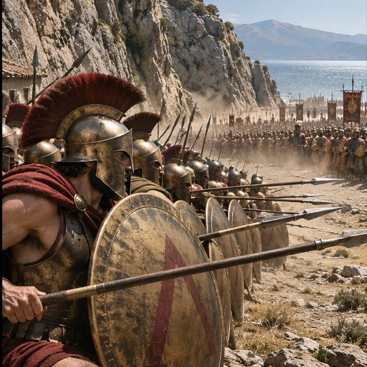
Termopili: un passo stretto e una coalizione greca. Ricostruzione illustrata.
«O straniero, annuncia agli Spartani che qui giacciamo, obbedienti alle loro leggi.»
SINTESI VISIVA
La società spartana in una sola mappa
I collegamenti sono più importanti dei singoli termini.
SPARTApolis della Laconia
SOCIETÀSpartiati · Perieci · Iloti
ECONOMIATerre e lavoro agricolo degli Iloti
EDUCAZIONEAgoghé · disciplina · gruppo
ESERCITOOpliti · falange · cooperazione
GOVERNO2 re · Gherusia · Efori · Apella
CULTURAPoesia · canti · religione · sobrietà
Tutti questi elementi si influenzano a vicenda: il lavoro sostiene l'esercito; l'esercito difende il potere; l'educazione forma i cittadini che devono mantenere quel sistema.
PRIMA DEL TEST
I saperi irrinunciabili
Se sai spiegare questi nove punti con parole tue, hai compreso l'essenziale.
0 di 9 punti ripassati.
VOCABOLARIO STORICO
Le parole da conoscere
Puoi cercare un termine o una parola della definizione.
Nessun termine trovato. Prova un'altra parola.
LABORATORIO DI STORIA E NARRAZIONE
Incontro con un vecchio spartiate
Una ricostruzione narrativa: il vecchio parla dall'interno del proprio mondo, con i suoi valori e la sua durezza.
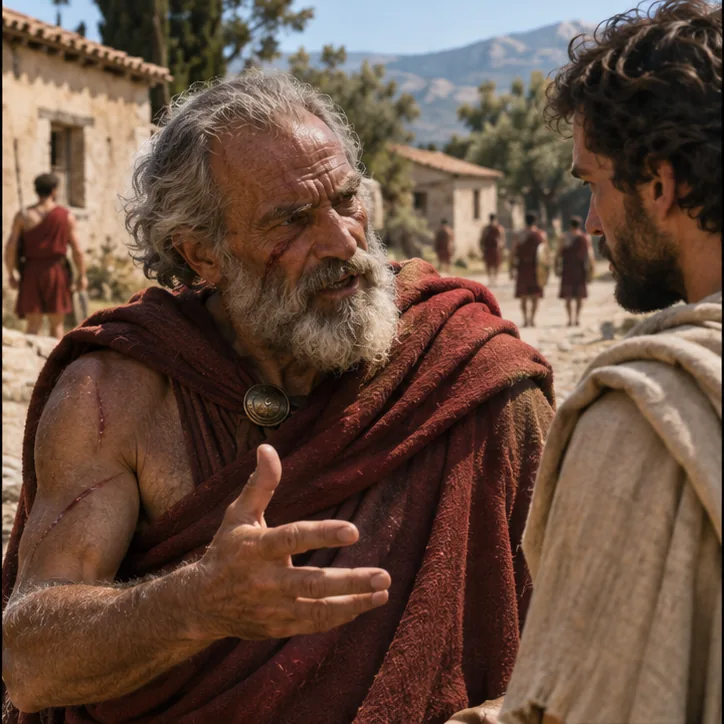
Il visitatore incontra un vecchio spartiate — scena ricostruita
Come leggere questa intervista. I personaggi, le conversazioni e gli episodi sono inventati; non sono trascrizioni di testimonianze. Alcune pratiche controverse sono presentate come le racconterebbe il personaggio. In particolare, la scena del bosco e il «controllo delle ferite» non vanno studiati come fatti accertati. Il finale anticipa volutamente un epigramma successivo alle Termopili. Guarda il video di partenza ↗
1. Una città senza mura⌄
Lasciamoli al loro oblio. In questo nuovo viaggio ci accompagneranno soltanto le loro storie, trasformate dal tempo in mito.
Siamo in una grande pianura. Le montagne del Taigeto si alzano a occidente, mentre davanti a noi si estendono campi coltivati, strade polverose e piccoli villaggi.
Siamo arrivati a Sparta.
La città è famosa in tutta la Grecia per la potenza del suo esercito e per la severità dei suoi costumi. Eppure, a prima vista, non sembra una città capace di incutere tanto timore.
Non vediamo mura ciclopiche come quelle di Micene, né una grande rocca che domina il territorio. Ci sono abitazioni, spazi aperti, gruppi di edifici separati da strade e campi.
Con le nostre categorie potremmo persino esitare a chiamarla città. Ma Sparta è una polis: una comunità politica indipendente, con leggi proprie, istituzioni e un vasto territorio sottoposto al suo potere.
Entriamo in uno dei villaggi.
Notiamo subito che gli abitanti non si comportano tutti allo stesso modo. Alcuni uomini, avvolti in mantelli semplici, camminano con passo sicuro. Guardano gli altri direttamente negli occhi, senza abbassare la testa. Altri procedono guardinghi, si spostano quando incontrano un gruppo di guerrieri e sembrano evitare qualsiasi occasione di attirare l'attenzione.
Un vecchio ci osserva.
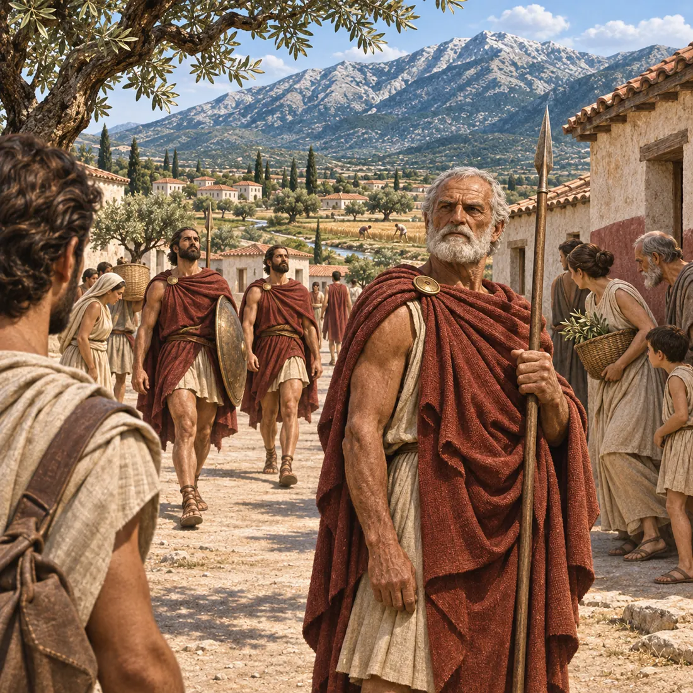
Il primo incontro con il vecchio spartiate. Ricostruzione narrativa.
Ha la barba grigia, il volto scavato e una lunga cicatrice che gli attraversa il braccio sinistro. Indossa un mantello rosso scuro.
«Straniero. Ti sei perduto?»
«Cerco Sparta.»
Il vecchio lascia uscire una breve risata.
«Allora sei arrivato.»
«Questa sarebbe Sparta?»
«Che cosa ti aspettavi?»
«Mura, torri, una fortezza. Qualcosa che proteggesse la città.»
Il vecchio stringe gli occhi.
«Le nostre mura sono gli scudi degli uomini.»
«Ma un esercito nemico potrebbe entrare direttamente nelle vostre strade.»
«Prima dovrebbe passare sui nostri cadaveri.»
La risposta non lascia spazio a ulteriori osservazioni.
«Sei uno Spartiata?»
«Lo sono da quando sono nato. Mio padre lo era prima di me, e suo padre prima di lui.»
«Vorrei conoscere la vostra città.»
Il vecchio mi studia per qualche istante.
«Allora seguimi. Ma non aspettarti di trovare qui le mollezze degli Ioni. Noi non alleviamo uomini per farli vivere tra profumi e cuscini.»
Si volta senza attendere una risposta.
Lo seguo.
2. Il sangue degli Iloti⌄
Abbiamo percorso poca strada quando sentiamo delle grida provenire da un bosco.
Un uomo urla. Altri sembrano correre tra gli alberi.
Poi un grido più forte.
Ci avviciniamo.
Un corpo giace sulla terra. Una lancia gli ha aperto una ferita profonda. Il sangue si allarga lentamente sulla polvere.
Accanto al cadavere c'è un giovane armato.
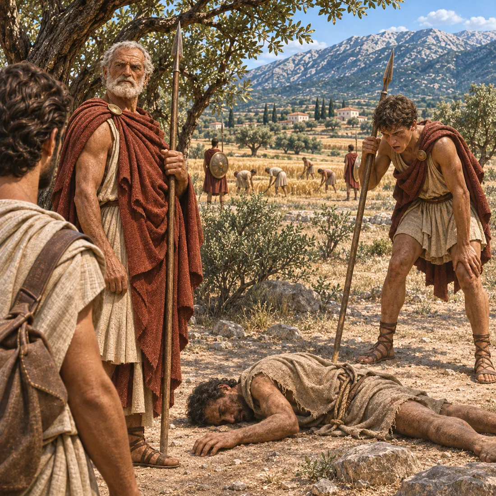
Nel bosco, la violenza contro un Ilota. Scena immaginata: non è una testimonianza storica della krypteia.
Respira affannosamente. Ha ancora la lancia in mano. Guarda l'uomo morto, poi il vecchio che mi accompagna.
Il vecchio gli rivolge un cenno.
«Hai esitato?»
«No.»
«Bene.»
Il giovane si allontana.
Rimango immobile.
«Chi era quell'uomo?»
«Un Ilota.»
«E chi lo ha ucciso?»
«Uno dei nostri giovani.»
«Per quale motivo?»
Il vecchio mi guarda come se la domanda fosse sciocca.
«Oggi è un giorno particolare. I giovani stanno affrontando una delle prove più dure.»
«Uccidere un uomo?»
«Imparare a non tremare davanti al sangue.»
«Ma quell'uomo non era armato.»
«E allora?»
«Non poteva difendersi.»
«Non ti ho detto che fosse un combattimento tra pari.»
Il vecchio si avvicina al cadavere. Lo osserva senza chinarsi.
«Gli Iloti lavorano le nostre terre. Sono le popolazioni che abbiamo sottomesso in Laconia e in Messenia. I loro campi ci nutrono. Le loro braccia ci permettono di dedicarci alla guerra.»
«Sono schiavi?»
«Sono servi di Sparta. Coltivano la terra e consegnano ciò che devono. Non possono andarsene quando vogliono.»
«E perché li trattate così?»
«Perché li abbiamo vinti.»
Lo dice senza alzare la voce, come se avesse spiegato perché il sole sorge a oriente.
«E non temete che si ribellino?»
Il vecchio mi fissa.
«Sono molti più di noi. Naturalmente potrebbero ribellarsi. Lo hanno già fatto.»
«E allora?»
«Allora devono ricordare chi possiede le armi.»
Indica il bosco.
«Da noi esiste una pratica chiamata krypteia. Alcuni giovani vengono mandati nelle campagne. Devono muoversi senza essere visti, sopportare la fame, vivere nascosti. E gli Iloti devono sapere che uno Spartiata può raggiungerli anche quando credono di essere al sicuro.»
«È una guerra contro i vostri stessi servi.»
«Gli Efori, secondo una nostra tradizione, dichiarano guerra agli Iloti. Così chi li colpisce non si macchia del sangue di un concittadino.»
«Ma sono uomini.»
Il vecchio si gira bruscamente.
«Non sono Spartiati.»
Per qualche istante non parla.
Poi riprende:
«Tu hai visto un giovane che ha ucciso. Io ho visto un giovane che non ha esitato. Quando si troverà davanti ai Persiani, dovrà affondare la lancia senza tremare. Se esiterà, morirà lui. E forse morirà anche il compagno al suo fianco.»
«Dunque è questa la vostra scuola?»
«Questa è una delle sue prove più dure. La nostra vera scuola comincia molto prima.»
Si allontana dal bosco.
«Vieni. Ti mostrerò che cosa significa diventare uno Spartiata.»
3. Un muro di lance e di scudi⌄
Raggiungiamo uno spazio aperto.
Decine di uomini si stanno addestrando. Indossano corazze ed elmi di bronzo, impugnano lunghe lance e portano grandi scudi rotondi.
Un uomo grida un ordine.
I guerrieri si dispongono in file serrate.
«Guarda», dice il vecchio. «Questa è la nostra forza.»
«La falange.»
«Conosci il nome. Vediamo se ne comprendi il significato.»
I guerrieri avanzano.
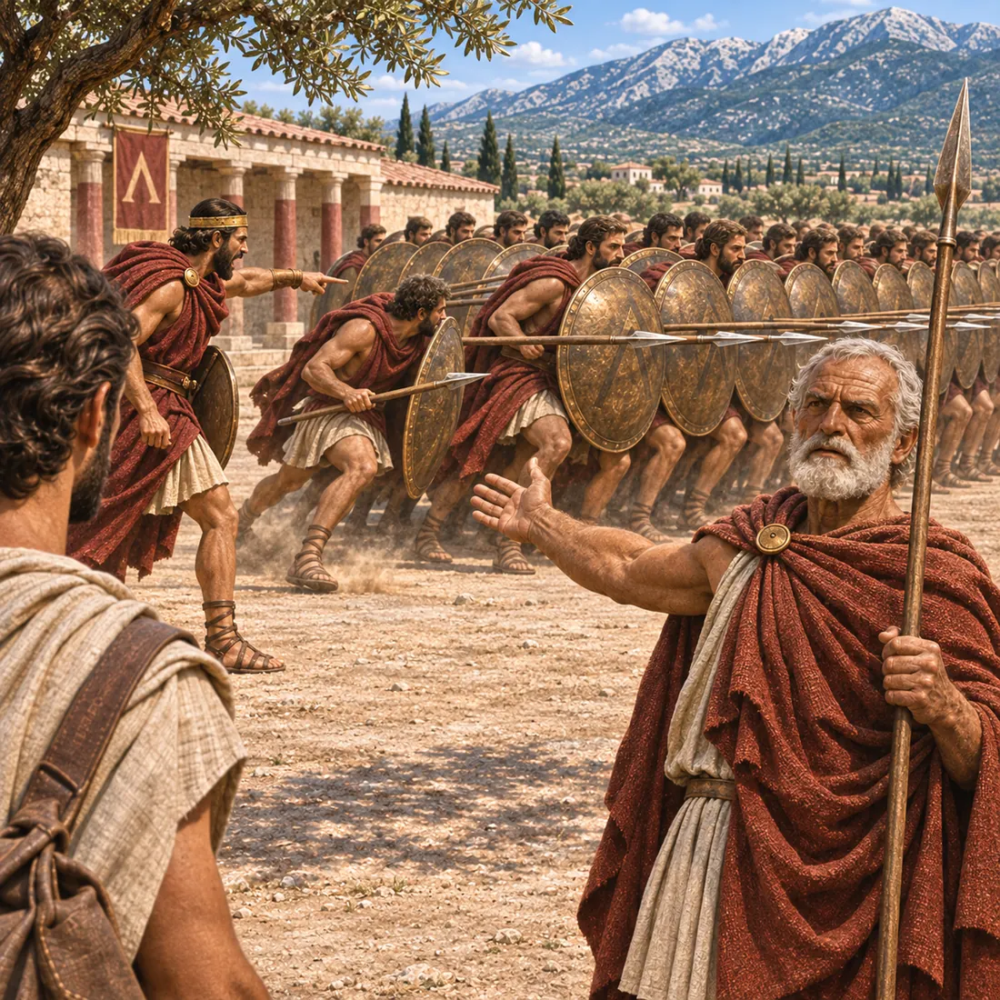
Il vecchio illustra la falange e l’importanza di mantenere la formazione.
Gli scudi si sovrappongono parzialmente. Le lance formano una barriera davanti alla prima fila.
«Ogni uomo protegge il proprio corpo e contribuisce a coprire il compagno alla sinistra. Se uno avanza troppo, rompe la formazione. Se uno resta indietro, lascia un varco. Se uno fugge, espone gli altri.»
«E se ha paura?»
«La paura è affare suo. Il varco che lascia riguarda tutti.»
Un soldato perde il passo.
Il comandante gli urla contro. L'uomo torna immediatamente in posizione.
«Hai visto?»
«Sì.»
«Una falange non è fatta di uomini che cercano ciascuno la propria gloria. È fatta di uomini che devono obbedire allo stesso comando.»
«Un guerriero valoroso potrebbe combattere anche da solo.»
«E morire da sciocco.»
Il vecchio indica la formazione.
«Un uomo può essere forte, rapido, abile con la lancia. Non importa. Se abbandona i compagni, vale meno del più debole tra quelli che restano al loro posto.»
«E chi getta lo scudo per fuggire?»
Il volto del vecchio si indurisce.
«Lo scudo è pesante. Per correre più velocemente bisogna abbandonarlo. Ecco perché perdere lo scudo senza ragione è una vergogna.»
«Ma potrebbe salvarsi la vita.»
«E con quale faccia tornerebbe a Sparta?»
«Almeno sarebbe vivo.»
Il vecchio mi osserva con evidente disprezzo.
«Vivo. È questa la tua misura di un uomo? Il fatto che respiri?»
Non rispondo.
«Uno Spartiata che abbandona i compagni può continuare a respirare per molti anni. Ma non sarà più guardato come prima. Gli uomini ricorderanno. Le donne ricorderanno. I suoi figli sapranno.»
Indica ancora la falange.
«Noi non siamo uomini isolati. In battaglia siamo un solo corpo. Se un uomo cede, mette in pericolo tutti.»
«Per questo vi addestrate continuamente?»
«Per questo viviamo come viviamo.»
4. La dimora dello Spartiata⌄
Il vecchio mi accompagna verso la sua abitazione.
La casa è semplice. Gli arredi sono pochi. Non vedo oggetti particolarmente preziosi né decorazioni elaborate.
«Questa è la mia dimora. Sobria, essenziale. Nulla deve distrarre uno Spartiata dai suoi doveri.»
«Non hai statue? Oggetti preziosi?»
«A che servirebbero?»
«Ad Atene le famiglie ricche mostrano con orgoglio le proprie ricchezze.»
«Gli Ateniesi possono permettersi di trascorrere il tempo a contemplare le cose. Noi preferiamo che siano i nemici a contemplare le nostre lance.»
Si sfiora una cicatrice.
«Questa l'ho ricevuta in battaglia. Non la venderei per tutto l'oro di un mercante.»
«Dunque non avete ricchezze?»
«Abbiamo terre, case, beni. Non siamo tutti ricchi allo stesso modo. Ma uno Spartiata non dovrebbe misurare il proprio valore con il denaro.»
«Eppure vi chiamate uguali.»
«Homoioi. Uguali.»
«In che senso?»
«Siamo cittadini della stessa città. Abbiamo ricevuto la stessa educazione. Combattiamo nello stesso esercito. Dobbiamo rispettare le stesse leggi.»
«Anche i vostri re?»
«Persino i re devono obbedire alle leggi di Sparta.»
Il vecchio si siede.
Una donna entra con una brocca d'acqua e la posa sul tavolo. Non parla. Poco dopo si allontana.
«È una serva?»
«Un'Ilota.»
«Vive qui?»
«Lavora per la mia famiglia.»
«E tu non devi occuparti di questi lavori?»
Il vecchio solleva le sopracciglia.
«Ho trascorso la vita a prepararmi alla guerra, straniero. Credi che abbia tempo per lavare pavimenti e trasportare acqua?»
5. Il bambino di Sparta⌄
Un bambino entra nella stanza.
Ha i capelli corti e il viso arrossato dal sole.
«Nonno!»
Il vecchio gli fa cenno di avvicinarsi.
«Questo è mio nipote. Ha sette anni.»
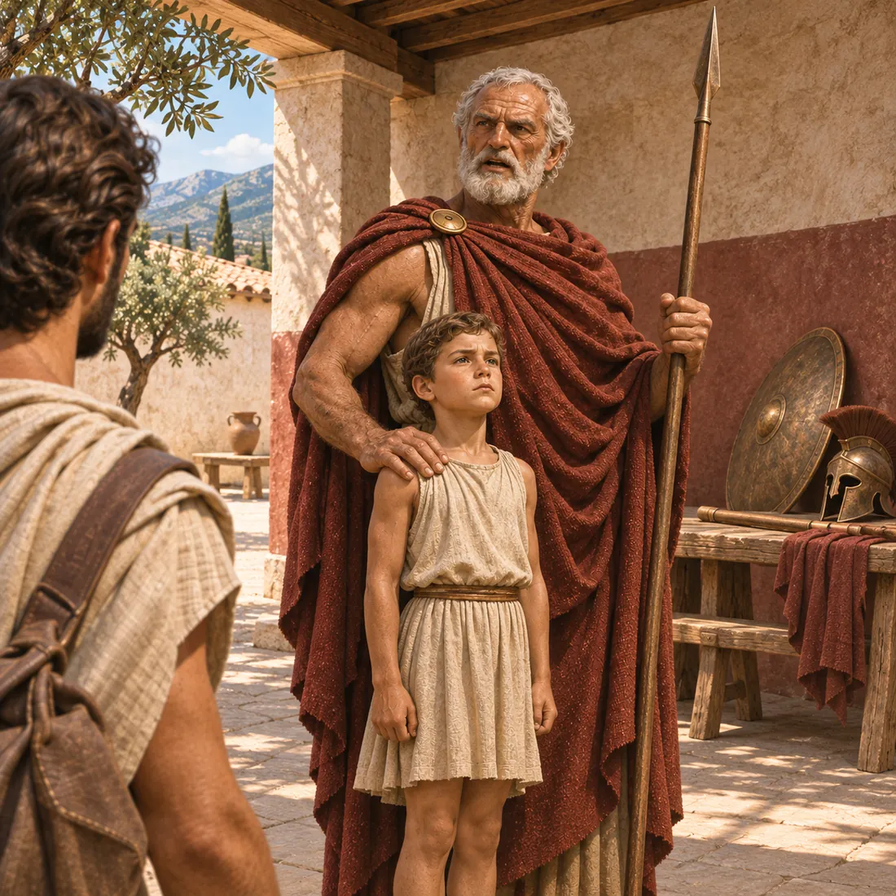
Il nipote dello Spartiata e il futuro percorso educativo. Scena immaginata.
Il bambino rimane diritto, con le braccia lungo i fianchi.
«Non saluti lo straniero?», domanda il vecchio.
«Ti saluto», dice il bambino.
«Presto comincerà la sua educazione.»
«È ancora molto piccolo.»
«È già abbastanza grande.»
«Che cosa intendi?»
«Finora è cresciuto nella casa dei genitori. Ma a sette anni la città comincia a occuparsi della sua formazione.»
«Sarà portato via dalla madre?»
«Trascorrerà gran parte del suo tempo con gli altri ragazzi, sotto la sorveglianza degli uomini incaricati di educarli.»
«E che cosa gli insegneranno?»
«A obbedire prima di parlare. A resistere alla fatica. A correre, a lottare, a sopportare il freddo e la fame. Imparerà a usare le armi, a cantare i nostri inni, a conoscere le leggi.»
«Studierà anche la lettura e la scrittura?»
«Quanto occorre. Non vogliamo uomini incapaci di comprendere un ordine o una legge. Ma neppure giovani che credano di diventare valorosi soltanto discutendo.»
«E se disobbedisce?»
Il vecchio guarda il nipote.
«Sarà punito.»
Il bambino non abbassa gli occhi.
«E se piange?»
«Imparerà a sopportare senza lamentarsi.»
«E se ha fame?»
«Imparerà a resistere.»
«È un'educazione dura.»
«La guerra è più dura.»
Il vecchio appoggia una mano sulla testa del bambino.
«A vent'anni sarà pronto a entrare nella vita militare adulta. A trent'anni, se avrà conservato il proprio posto tra i cittadini, potrà partecipare alla nostra assemblea.»
«E prima di allora?»
«Servirà Sparta.»
«Non potrà scegliere un'altra vita?»
Il vecchio sembra sinceramente stupito.
«Un'altra vita? È nato Spartiata.»
Poi rivolge al bambino una domanda.
«Che cosa farai se un giorno il compagno alla tua sinistra cadrà?»
«Resterò al mio posto.»
«E se il nemico sarà più numeroso?»
«Resterò al mio posto.»
«E se avrai paura?»
Il bambino esita per un istante.
Il vecchio lo guarda severamente.
«Rispondi.»
«Resterò al mio posto.»
«Bene. Ora va'.»
Il bambino esce.
Lo seguo con lo sguardo.
«Mi hanno raccontato che a Sparta i neonati deboli vengono abbandonati su una montagna.»
Il vecchio incrocia le braccia.
«Si racconta che gli anziani abbiano il compito di giudicare se un bambino possa essere allevato. E che quelli ritenuti inadatti vengano abbandonati.»
«E tu che cosa ne pensi?»
«Che un uomo incapace di sopportare la vita non sopporterà la guerra. Ma non confondere tutte le storie raccontate sui nostri antenati con ciò che accade oggi in ogni casa.»
Poi si alza.
«Andiamo. Voglio mostrarti anche le nostre donne.»
6. Le donne spartane⌄
Poco lontano, alcune ragazze corrono su un terreno aperto.
Altre si esercitano nel lancio del disco, mentre un gruppo prova una danza accompagnata dal canto.
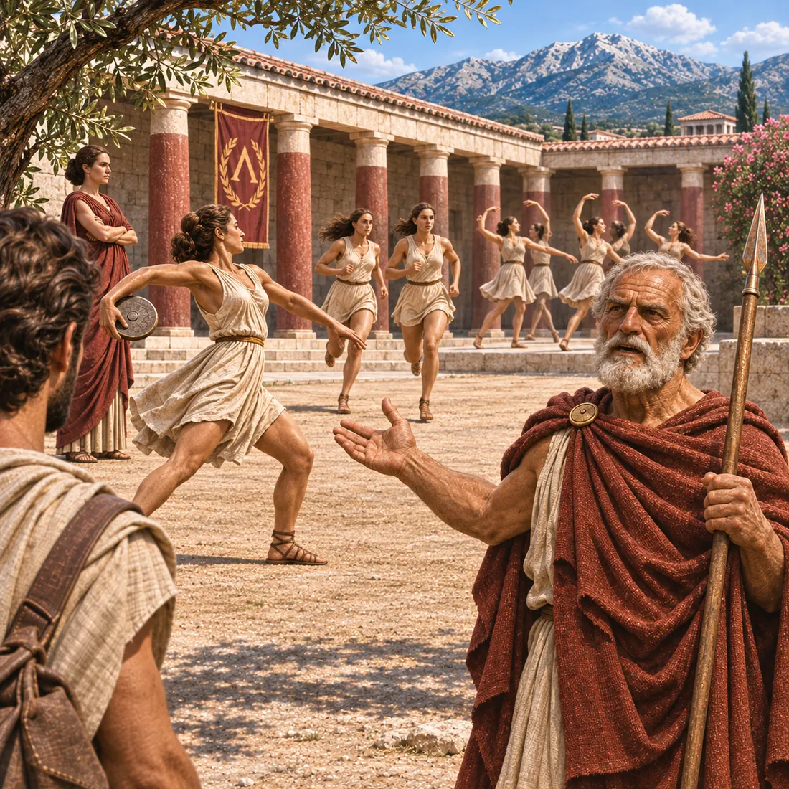
Le ragazze spartiati si allenano nella corsa, nel lancio e nella danza. Ricostruzione illustrata.
«Sono ragazze spartane?»
«Naturalmente.»
«Non sono rinchiuse nelle case?»
Il vecchio scoppia a ridere.
«Hai trascorso troppo tempo ad Atene.»
«Non mi aspettavo che praticassero questi esercizi.»
«Una donna debole genera figli deboli. Noi vogliamo donne robuste.»
«Dunque anche loro si preparano alla guerra?»
«No. Il loro compito non è combattere nella falange.»
«Allora perché si allenano?»
«Devono essere forti. Devono generare figli capaci di diventare guerrieri. Devono governare la casa quando gli uomini sono lontani. E devono conoscere le tradizioni della città.»
«Ma hanno maggiori libertà rispetto alle donne ateniesi.»
«Le nostre donne possono muoversi, allenarsi, possedere terre e amministrare beni. Non trascorrono necessariamente tutta la giornata nelle stanze della casa.»
«E i lavori domestici?»
«Molti vengono svolti dagli Iloti. Le donne delle nostre famiglie non devono vivere come serve.»
«Partecipano al governo?»
Il vecchio scuote la testa.
«La politica spetta ai cittadini. E i cittadini sono gli uomini Spartiati che possiedono i requisiti per partecipare alla vita della città.»
«Dunque sono libere, ma non possono decidere le leggi.»
«Hanno i loro doveri. Noi abbiamo i nostri.»
Si ferma e sorride.
«Conosci Gorgo, la moglie del nostro re Leonida?»
«Ne ho sentito parlare.»
«Una donna straniera, meravigliata dall'autorità delle nostre donne, le domandò perché le Spartane fossero le sole a comandare i propri uomini.»
«E che cosa rispose?»
«Che siamo le sole donne a generare uomini.»
Il vecchio ride soddisfatto.
«Questa è una risposta degna di Sparta!»
Poi indica una donna che sta osservando alcuni giovani impegnati nell'addestramento.
«Ma le nostre donne non si limitano a generare guerrieri. Devono anche insegnare loro che cosa significhi essere Spartiati.»
«In che modo?»
«Quando un uomo parte per la guerra, sua madre o sua moglie può consegnargli lo scudo e dirgli: "O con questo, o sopra questo".»
«Non comprendo. Che cosa significa?»
Il vecchio si volta verso di me.
«Significa che deve tornare con il proprio scudo, dopo aver combattuto senza abbandonare i compagni, oppure essere riportato morto sopra di esso.»
«Perché proprio lo scudo?»
«Te l'ho già spiegato. La lancia serve a colpire il nemico. Lo scudo protegge anche il compagno. Chi fugge può gettare lo scudo per correre più velocemente. Ma così lascia scoperti gli altri.»
«Dunque una donna spartana preferirebbe vedere il proprio figlio morto piuttosto che vederlo tornare senza scudo?»
Il vecchio mi fissa.
«Preferirebbe aver generato un uomo degno di Sparta.»
«Anche se dovesse perderlo?»
«Non credere che una madre spartana non conosca il dolore. Ma il dolore è suo. Il disonore ricadrebbe sull'intera famiglia.»
Rimane in silenzio per qualche istante, poi prosegue.
«E quando il guerriero torna sopra lo scudo, straniero, non credere che tutto sia finito.»
«Che cosa vuoi dire? È morto.»
«Proprio allora deve affrontare il suo ultimo esame.»
«Un morto deve ancora essere esaminato?»
«Si guardano le sue ferite.»
«Le ferite? Perché?»
«Per sapere come ha combattuto. Se ha ricevuto i colpi affrontando il nemico, ha mantenuto il proprio posto. È caduto da guerriero.»
Il vecchio si avvicina.
«Ma immagina che sul suo corpo si trovino soltanto ferite alla schiena.»
«Significherebbe che è stato colpito da dietro.»
«Significherebbe, ai nostri occhi, che ha voltato le spalle al nemico. Che ha tentato di fuggire mentre i compagni continuavano a combattere.»
«E che cosa accadrebbe?»
La voce del vecchio diventa gelida.
«Un uomo simile non meriterebbe gli onori funebri riservati a chi è morto combattendo. Non lo celebreremmo come un valoroso. Non avrebbe il funerale degno di uno Spartiata.»
«Ma è comunque morto per la sua città.»
Il vecchio scuote la testa.
«No. È morto cercando di salvarsi.»
«E questo basta a cancellare tutta la sua vita?»
«Sul campo di battaglia, straniero, non conta ciò che un uomo prometteva di essere. Conta ciò che ha fatto quando la morte gli si è presentata davanti.»
Guarda verso i giovani che si addestrano.
«Ricorda: uno Spartiata viene giudicato quando nasce, viene messo alla prova per tutta la vita e, se cade in guerra, persino il suo corpo deve testimoniare che non ha abbandonato il proprio posto.»
7. L'educazione di una città⌄
Attraversiamo uno spazio dove un gruppo di giovani canta in coro.
«Mi sorprende sentire tanta musica in una città di guerrieri.»
Il vecchio si volta.
«Credi forse che un guerriero debba essere sordo al canto?»
«Pensavo che la vostra educazione fosse soltanto militare.»
«La musica insegna il ritmo. Il coro insegna a seguire gli altri. La danza insegna a muoversi insieme.»
«Come nella falange.»
«Ora cominci a comprendere.»
I giovani continuano a cantare.
«Abbiamo poeti che celebrano gli dèi e gli antenati. Tirteo ha cantato il coraggio dei guerrieri e la vergogna di chi fugge. I nostri canti ricordano ai giovani che cosa significa appartenere a Sparta.»
«Dunque anche la poesia deve servire la città.»
«Che altro dovrebbe fare?»
«Ad Atene molti uomini discutono di politica, di arte e di filosofia.»
Il vecchio lascia uscire uno sbuffo.
«Che discutano. Noi insegniamo ai nostri ragazzi che le parole valgono poco se non sono seguite dai fatti.»
«Non amate i discorsi?»
«Amiamo quelli brevi.»
«Perché?»
«Perché un uomo che sa ciò che deve fare non ha bisogno di parlare continuamente.»
8. Il governo di Sparta⌄
Arriviamo vicino a uno spazio dove numerosi uomini si sono radunati.
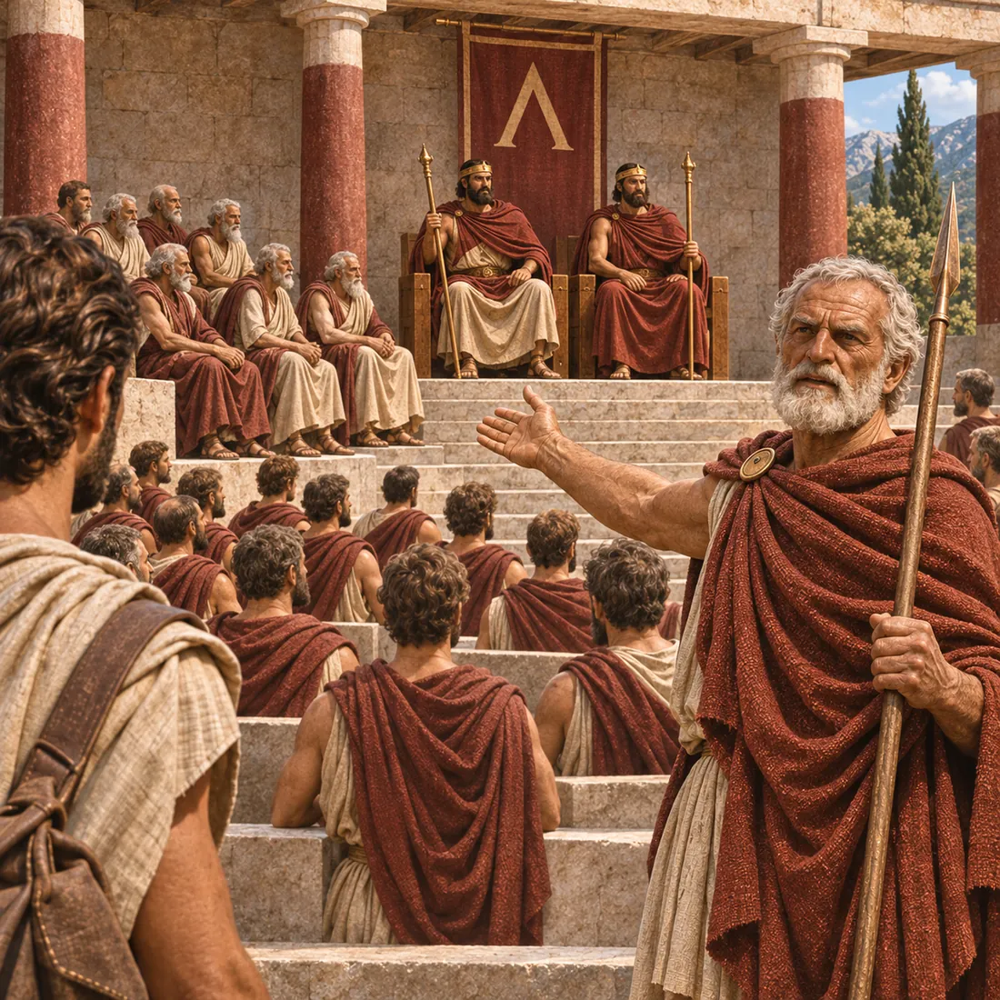
Il vecchio presenta le istituzioni di Sparta. Scena rappresentativa, non ricostruzione archeologica di un’assemblea reale.
Il vecchio mi indica il gruppo.
«Ecco gli Spartiati. Soltanto loro possiedono i pieni diritti politici.»
«Sono riuniti in assemblea?»
«Quando viene convocata, l'Apella riunisce gli Spartiati adulti che hanno compiuto trent'anni e conservano i diritti di cittadinanza.»
«Che cosa decidono?»
«Approvano o respingono le proposte e partecipano all'elezione dei magistrati.»
«Pensavo che Sparta fosse governata da un re.»
«Da due.»
«Due re?»
«Due famiglie regali governano secondo le nostre istituzioni. I re comandano gli eserciti, svolgono funzioni religiose e hanno il loro posto nella vita della città.»
«Non si fanno guerra tra loro?»
«Possono essere in disaccordo. Ma Sparta non appartiene a nessuno dei due.»
«E chi propone le leggi?»
«La Gherusia, il consiglio degli anziani. Ne fanno parte ventotto uomini che hanno superato i sessant'anni, insieme ai due re.»
«E chi controlla i re?»
«Cinque Efori. Sono eletti ogni anno dall'assemblea e vigilano sull'operato dei re e su molti affari della città.»
«Dunque anche un re può essere chiamato a rispondere delle proprie azioni.»
«Certamente.»
«Mi sembra un governo complesso.»
«È il governo di Sparta. Non abbiamo bisogno di imitare gli altri.»
«E gli Iloti non partecipano?»
Il vecchio mi guarda con impazienza.
«Te l'ho già spiegato. Gli Iloti lavorano le terre.»
«E i Perieci?»
«Nemmeno loro partecipano alle nostre assemblee.»
«Chi sono esattamente?»
«Vieni. Ti mostrerò anche questo.»
9. I Perieci⌄
Ci allontaniamo dal centro abitato.
Il vecchio indica le strade che portano verso altre comunità.
«Il territorio di Sparta è vasto. Oltre agli Spartiati e agli Iloti, vi abitano i Perieci.»
«Sono servi?»
«No. Sono uomini liberi.»
«E allora perché non possono partecipare al governo?»
«Perché non sono Spartiati.»
«Che cosa fanno?»
«Coltivano le loro terre, commerciano, lavorano nelle botteghe. Tra loro ci sono artigiani che producono armi, utensili e molti oggetti di cui abbiamo bisogno.»
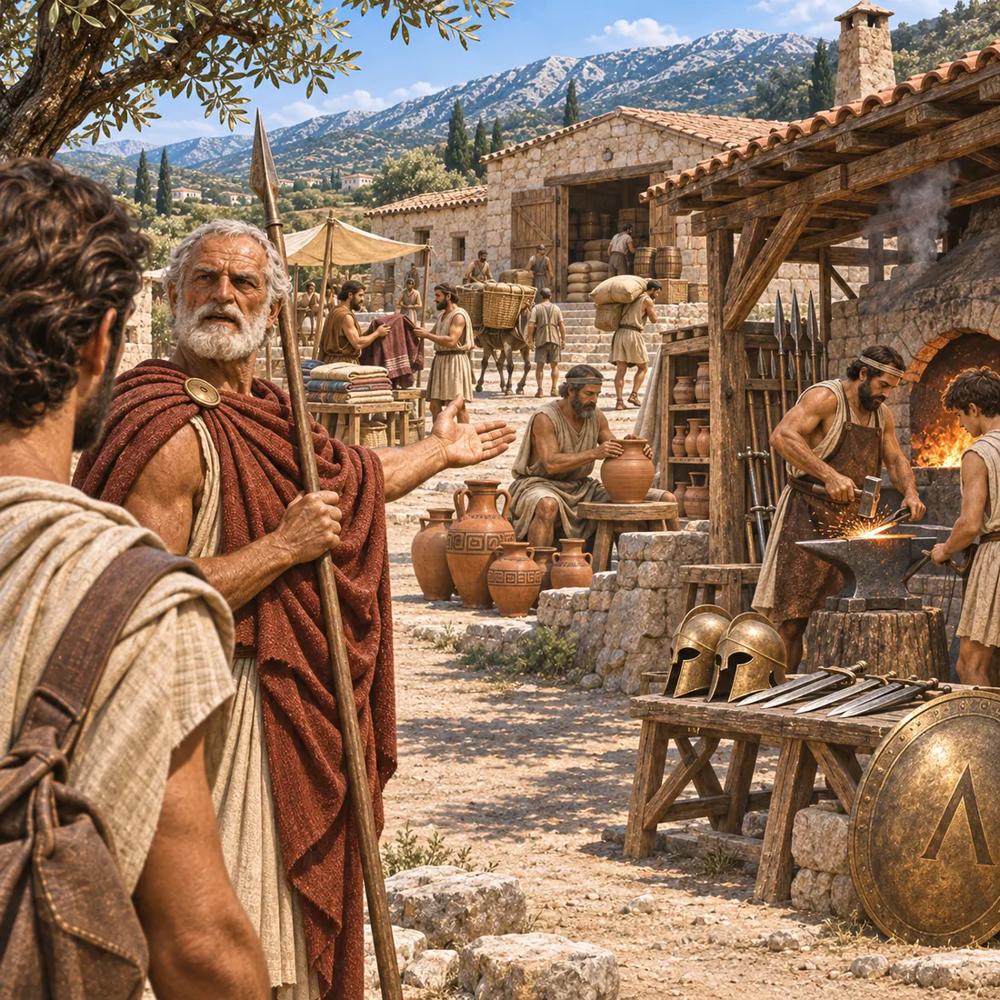
Artigiani e commercianti delle comunità perieciche. Ricostruzione narrativa.
«E quando c'è una guerra?»
«Combattono con noi.»
«Anche se non partecipano alle decisioni?»
«Le loro comunità sono sottoposte a Sparta. Quando Sparta chiama, devono rispondere.»
«E possono rifiutarsi?»
Il vecchio mi fissa.
«Possono provarci.»
Non aggiunge altro.
Dopo qualche passo riprendo la conversazione.
«Dunque il vostro territorio è abitato da tre grandi gruppi: Spartiati, Perieci e Iloti.»
«Esatto.»
«Voi Spartiati governate. I Perieci sono liberi, ma non partecipano al governo. Gli Iloti lavorano la terra in condizione servile.»
«Hai finalmente capito come funziona Sparta.»
«E voi vi definite uguali.»
«Uguali tra noi. Non ho mai detto che un Ilota fosse uguale a uno Spartiata.»
10. Verso le Termopili⌄
Mentre torniamo verso la città, incontriamo un gruppo di uomini che prepara le armi.
Alcuni controllano le lance. Altri sistemano gli scudi. Si avverte un'agitazione diversa da quella del normale addestramento.
«State per partire in guerra?»
Il vecchio si ferma.
«I Persiani stanno arrivando.»
«L'esercito di Serse?»
«Sì. Il Gran Re vuole piegare le città greche.»
«Si dice che abbia un esercito immenso.»
«Lo ha.»
«Come pensate di affrontarlo?»
Il vecchio raccoglie un ramo e traccia alcune linee sulla terra.
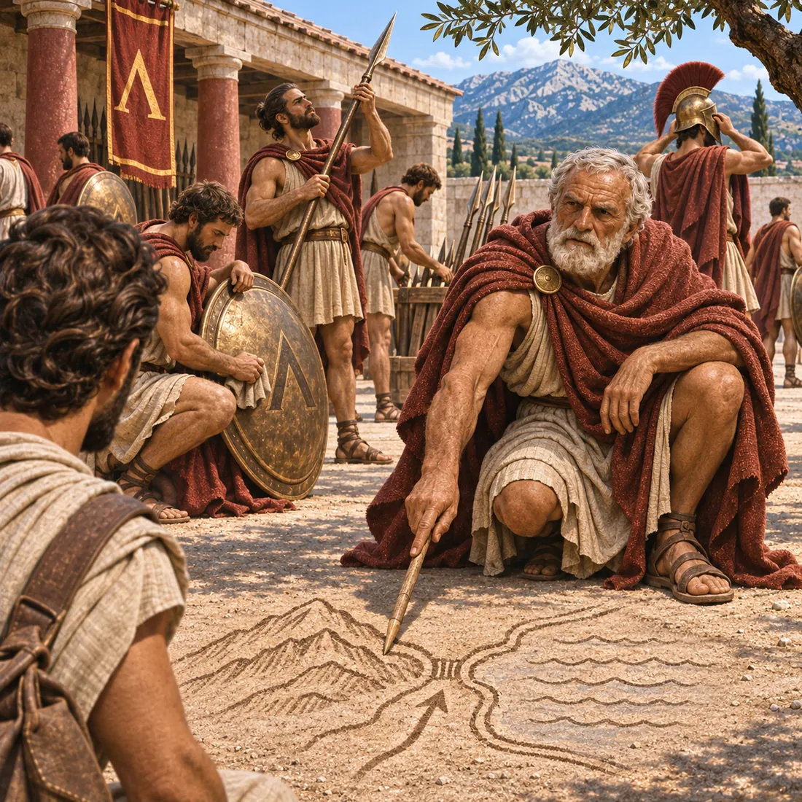
Una spiegazione del passo delle Termopili tracciata sulla terra. Scena immaginata.
«Guarda. Qui c'è la montagna. Qui c'è il mare. Fra i due c'è un passaggio stretto: le Termopili.»
«È là che lo fermerete?»
«Là tenteremo di arrestarne l'avanzata.»
«Ma i Persiani sono molto più numerosi.»
«Il loro numero servirà a poco se non potranno schierarsi tutti insieme.»
Il vecchio disegna alcune file di soldati.
«Noi combatteremo in falange. I loro uomini dovranno affrontarci in uno spazio ristretto, dove non potranno facilmente circondarci.»
«Quanti Spartiati partiranno?»
«Trecento, guidati dal re Leonida.»
«Trecento contro un esercito immenso?»
«Non saremo soli. Combatteranno con noi uomini di altre città greche. Ma i trecento saranno Spartiati scelti.»
«E riuscirete a vincere?»
Il vecchio mi guarda con fermezza.
«Dobbiamo resistere.»
«Anche se sapete di poter morire?»
«La morte non cambia il nostro dovere.»
«Ma se sarete sconfitti, tutto sarà inutile.»
Il vecchio afferra il ramo e lo spezza.
«Tu misuri il valore di una battaglia contando soltanto i morti e i vivi. Noi sappiamo che ogni giorno guadagnato può servire alle città alleate per preparare la difesa.»
«E quando non potrete più resistere?»
«Allora moriremo.»
Lo dice come se avesse annunciato l'arrivo della notte.
«Così semplicemente?»
«Non c'è nulla di semplice nella morte. Ma non cambia ciò che dobbiamo fare.»
«Non preferiresti tornare a casa?»
Il vecchio mi guarda con durezza.
«Tornare dopo aver abbandonato il proprio posto?»
«Tornare vivo.»
«Vivo, ma disonorato.»
Si avvicina, quasi volesse assicurarsi che comprenda ogni parola.
«Ascolta, straniero. Uno Spartiata non è allevato per fuggire davanti al nemico. È allevato per restare al proprio posto.»
Indica i soldati.
«Guarda quegli uomini. Sanno che potrebbero morire. Eppure preparano le armi. Nessuno chiede quanti anni gli restano da vivere. Nessuno domanda quale ricompensa riceverà.»
«E tu partirai con loro?»
Il vecchio raddrizza le spalle.
«Quando Sparta chiama, un uomo deve rispondere. Non spetta a me decidere se sono troppo vecchio per servirla.»
«E se Serse ordinasse di consegnare le armi?»
Il vecchio sorride per la prima volta da quando abbiamo cominciato a parlare della guerra.
«Dovrà venire a prendersele.»
11. L'addio⌄
«Devo riprendere il mio cammino», dico. «Ho ancora molte città della Grecia da visitare.»
«Allora va', straniero.»
«Ti ringrazio. Mi hai fatto conoscere Sparta. Spero di rivederti un giorno.»
«Ora lasciami andare, straniero. Sparta ha bisogno dei suoi uomini.»
Fa qualche passo, poi si volta un'ultima volta.
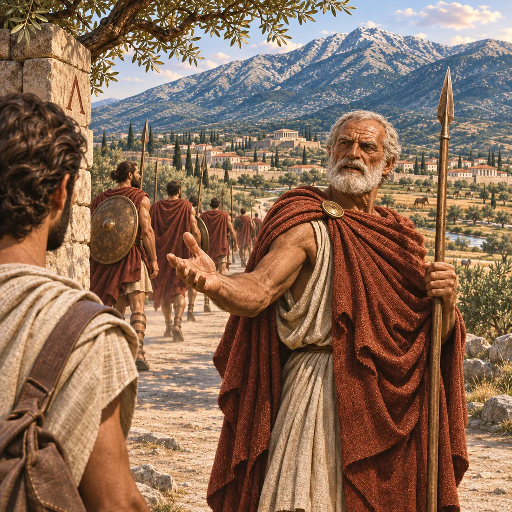
L’addio tra il viandante e il vecchio spartiate. Ricostruzione narrativa.
«E se un giorno ritornerai a Sparta, ricorda...»
La sua voce si fa ferma, solenne.
«O straniero, che noi morimmo obbedienti alle nostre leggi.»
AUTOVALUTAZIONE
Test finale su Sparta
24 domande, tre alternative ciascuna. Le opzioni sono equilibrate nella lunghezza: conta il ragionamento, non un trucco grafico.
12conoscenze
12comprensione
24punti possibili
Il test funziona in questo browser. Nessuna risposta viene inviata a un server; il report può essere salvato o stampato localmente.
Fonti e metodo
La lezione riprende l'impianto del materiale didattico precedente e lo amplia con controlli storiografici. Le immagini sono ricostruzioni illustrative generate per questa lezione, non reperti archeologici né documenti dell'epoca.